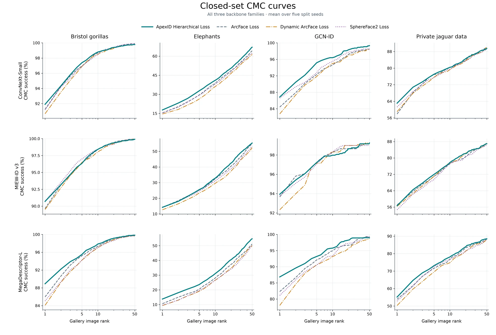

ApexID: Hierarchical Learning for Multi-Species Animal Re-Identification
- 1Made In Alexandria AI Team (M.I.A Robotics)
- 2Alamein International University
- 3Alexandria University
- 4hyper³labs
- 5Universidade Federal de Mato Grosso
- 6Hasso Plattner Institute
- *Equal contribution
- †Corresponding authors: seifeldean.hosny.2024@aiu.edu.eg, cds.MohamedMohamed24510@alexu.edu.eg
Abstract
Animal re-identification (Re-ID) must distinguish individuals across species and capture conditions. We introduce ApexID, a hierarchical SphereFace2-based loss that integrates global identity discrimination with balanced animal-category supervision. Using 132,533 images curated from 19 public datasets, we evaluate three model families and four objectives on four external datasets with observation-aware retrieval protocols. ApexID achieves a dataset-averaged Rank-1 accuracy of 64.89% with ConvNeXt-Small and an mAP of 32.54% with MIEW-ID, outperforming their pretrained reference models. On elephants, a category absent from animal Re-ID training, our ConvNeXt-Small variant achieves the highest retrieval performance among the fourteen evaluated configurations. Scores vary by backbone and dataset, and open-set evaluation reveals remaining discovery challenges. These findings support hierarchical category–identity learning to improve transfer to unseen datasets and species.

1. Method
Identity-only objectives ignore the category–identity structure that multi-species annotations already carry. ApexID maps curated animal foregrounds into one embedding space shared by every species and trains it with a two-level objective. An identity's parent is a broad animal category, such as whale or sea turtle, harmonized across all 19 sources.
- Global identity term ℒG
- A SphereFace2 objective over learnable identity sub-centers. The similarity to an identity is the largest cosine between the embedding and that identity's K proxies. Each image is pushed toward its true identity and away from every other training identity.
- Balanced category term ℒSP
- One learned proxy per animal category, trained with cross-entropy weighted by ωs ∝ ns−1/2, so categories with few identities are not drowned out by whales and lynx.
- Inference
- Both heads are dropped. Retrieval ranks gallery images by cosine similarity between normalized embeddings. Query category labels are never needed.
2. A curated multi-source corpus
We harmonize annotations from 19 public datasets and filter near-duplicates within each identity using MegaDescriptor embeddings. Foregrounds are segmented with SAM 3. Every image is reviewed by hand in V-Rush, and incomplete masks are fixed with box-prompted MobileSAM and a manual brush. Each observation group sits wholly in one partition, so validation never sees a near-copy of a training image.
| Total (unique) | 132,533 | 13,348 | |
|---|---|---|---|
| Partition | Images | Identities |
|---|---|---|
| Training | 90,921 | 11,677 |
| Known-identity validation | 28,070 | 10,768 |
| Held-out-identity validation | 13,542 | 1,671 |
3. Closed-set retrieval
We compare ConvNeXt-Small, MIEW-ID v3 and MegaDescriptor-L, each trained or fine-tuned with ArcFace, Dynamic ArcFace, SphereFace2 or the ApexID Hierarchical Loss. Together with the two unmodified animal Re-ID checkpoints, that gives fourteen configurations. Evaluation uses four external datasets that are excluded from all training: ELPephants, GCN-ID, Bristol Gorillas, and private jaguar data. Each dataset is scored over five observation-disjoint split seeds.
Within every backbone family, ApexID is best on all five macro metrics. All eight fine-tuned animal Re-ID configurations beat their original checkpoints on Rank-1 and mAP.
| Loss | R-1 | mAP | mINP | ID-bal. mAP | ID-bal. R-1 | Bar for selected metric |
|---|

3.1. How much category supervision?
We vary the category weight λSP on ConvNeXt-Small and hold everything else fixed. SphereFace2 without the category term is the reference. Every weight we tried beats it, and the main results use λSP = 0.50.
4. Transfer to an unseen species
Elephants appear in neither ApexID training nor the training of MIEW-ID v3 or MegaDescriptor-L. On ELPephants, ConvNeXt-Small with the ApexID Hierarchical Loss reaches 17.69% Rank-1 and 6.63% mAP, the highest of all fourteen configurations. The low absolute scores show that unseen-category transfer remains hard.
- ApexID Hierarchical
- ArcFace
- Dynamic ArcFace
- SphereFace2
- Original checkpoint
5. Open-set association and discovery
We also run the AnimalCLEF 2026 calibrated-similarity and graph-clustering pipeline on every embedding. A high closed-set score does not imply a high open-set score. Macro ARI spans only 0.411 to 0.451. With ConvNeXt-S, ApexID gives the best known-individual recognition (BAKS), while SphereFace2 leads on ARI and pairwise F1.
| Loss | ARI | B³ F1 | Pair F1 | Nov. ARI | BAKS | NormAcc |
|---|
6. Where the models look
ScoreCAM maps for every backbone and objective on the same query image. Switch the dataset or the panel to compare attention across objectives.
7. Code, weights and data
| Encoder | Initialization | Params | Dim. | Input | Weights |
|---|---|---|---|---|---|
| ConvNeXt-Small | ImageNet-1k (TorchVision) | 49.45M | 2048 | 440² | ApexID_ConvNext_Backbone |
| MIEW-ID v3 | conservationxlabs/miewid-msv3 | 51.08M | 2152 | 440² | ApexID_MiewID_Backbone |
| MegaDescriptor-L | BVRA/MegaDescriptor-L-384 | 195.20M | 1536 | 384² | ApexID_MegaDescriptor_Backbone |
7.1. Quick start
Clone the repository and install it. Then load any released encoder with its matching config:
import torch
from huggingface_hub import hf_hub_download
from apexid.data import build_eval_transforms
from apexid.evaluation.embeddings import ApexIDModelAdapter
from apexid.utils.config import load_config
# ConvNeXt-Small: configs/default.yaml
# MIEW-ID v3: configs/miewid_v3/apexid_hierarchical.yaml
# MegaDescriptor-L: configs/megadescriptor_l/apexid_hierarchical.yaml
config = load_config(config_path="configs/default.yaml")
weights = hf_hub_download(
"Made-In-Alexandria-AI/ApexID_ConvNext_Backbone", "best_backbone.pt"
)
device = torch.device("cuda" if torch.cuda.is_available() else "cpu")
model = ApexIDModelAdapter.from_checkpoint(config, weights, device).model
transform = build_eval_transforms(config=config) # resize + normalize
# rgb_array: H x W x 3 uint8 image of a segmented animal
with torch.inference_mode():
x = transform(image=rgb_array)["image"][None].to(device)
embedding = model(x) # L2-normalized vector- GitHub: training, evaluation, observation-aware split builder, frozen splits
- Hugging Face: the three encoders above
- ApexID Dataset: split manifests, per-source licenses, and segmented images where the source license allows redistribution
- AnimalCLEF26: the open-set pipeline used in Section 5 (arXiv:2608.02469)
8. Limitations
ApexID assumes a two-level category–identity hierarchy, so its effect depends on how granular and reliable the category labels are. The categories are broad animal types, not a consistent taxonomic rank. For example, every whale shares one whale category regardless of species, because the source annotations do not reliably identify species. Open-set gains vary by backbone and dataset.
Citation
@article{elkerdany2026apexid,
title = {ApexID: Hierarchical Learning for Multi-Species Animal Re-Identification},
author = {Elkerdany, Seifeldin and ElBassat, Mohamed and Abouelhamd, Gamal and
Elkady, Assem and Ghoneim, Jana and Mahmood, Matin and
Martin, Abigail Allen and de Melo, Gerard and Rueda-Toicen, Antonio},
journal = {arXiv preprint arXiv:2611.29723},
year = {2026},
eprint = {2611.29723},
archivePrefix = {arXiv},
primaryClass = {cs.CV}
}